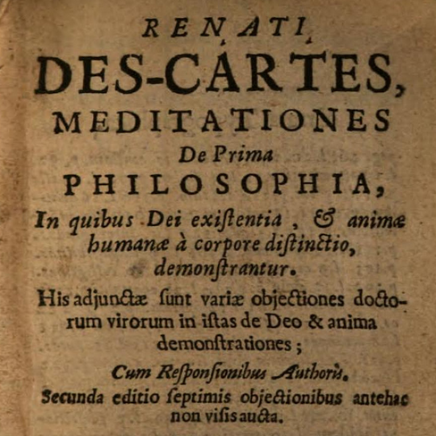

First Meditation
Tue., Jan. 20
In this class, we discuss the First Meditation, entitled “What can be called into doubt”. In his Synopsis, Descartes writes that this Meditation provides two benefits: freeing us from our old preconceived opinions and helping our mind withdraw from the senses. Ultimately this method of doubt will lead us to findings that are incapable of doubt and absolutely certain.
We begin with an overview of Scholasticism and the Early Modern period. There is also a brief introduction of Descartes himself.
Key Concepts: Certainty, Method of Doubt
Readings:
First Meditation (required) - pp. 97–100 in textbook
Dedication, Preface, Synopsis (recommended)
Worksheets & Handouts:
Powerpoint Slides:
Other Resources:
Early Modern Texts
Stanford Encyclopedia of Philosophy